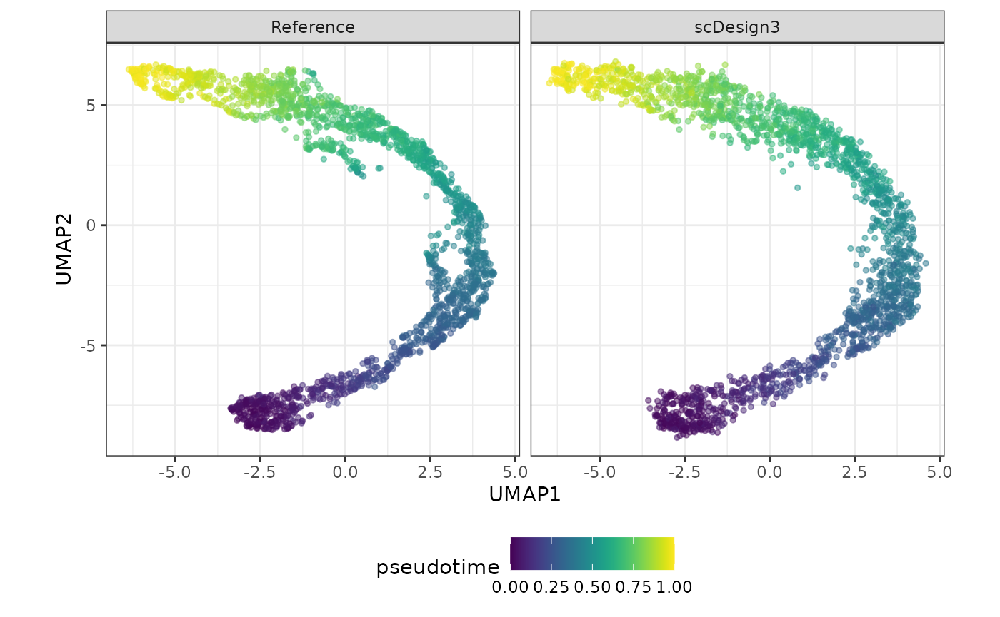

scDesign3 Introduction
Dongyuan Song
Bioinformatics IDP, University of California, Los Angelesdongyuansong@ucla.edu
Qingyang Wang
Department of Statistics, University of California, Los Angelesqw802@g.ucla.edu
11 July 2022
Source:vignettes/scDesign3-introduction-vignette.Rmd
scDesign3-introduction-vignette.RmdIn this tutorial, we will demostrate how to simulate a new dataset using a one-shot function or a sequence of functions provided by our package.
Read in the reference data
The raw data is from the scvelo, which describes pancreatic endocrinogenesis. We pre-select the top 1000 highly variable genes and filter out some cell types to ensure a single trajectory.
example_sce <- readRDS((url("https://www.dropbox.com/s/p1mvl5osxp55sot/PANCREAS_sce.rds?raw=1")))
print(example_sce)
#> class: SingleCellExperiment
#> dim: 1000 2087
#> metadata(5): clusters_coarse_colors clusters_colors day_colors
#> neighbors pca
#> assays(6): X spliced ... cpm logcounts
#> rownames(1000): Pyy Iapp ... Eya2 Kif21a
#> rowData names(1): highly_variable_genes
#> colnames(2087): AAACCTGAGAGGGATA AAACCTGGTAAGTGGC ... TTTGTCAAGTGACATA
#> TTTGTCAAGTGTGGCA
#> colData names(7): clusters_coarse clusters ... sizeFactor pseudotime
#> reducedDimNames(4): X_pca X_umap PCA UMAP
#> mainExpName: NULL
#> altExpNames(0):To save computational time, we only use the top 100 genes.
example_sce <- example_sce[1:100, ]Simulation
The function scdesign3() is a one-shot function that can generate new dataset.
set.seed(123)
example_simu <- scdesign3(
sce = example_sce,
assay_use = "counts",
celltype = "cell_type",
pseudotime = "pseudotime",
spatial = NULL,
other_covariates = NULL,
mu_formula = "s(pseudotime, k = 10, bs = 'cr')",
sigma_formula = "s(pseudotime, k = 5, bs = 'cr')",
family_use = "nb",
n_cores = 2,
usebam = FALSE,
corr_formula = "1",
copula = "gaussian",
DT = TRUE,
pseudo_obs = FALSE,
return_model = FALSE,
nonzerovar = FALSE
)Create SingleCellExperiment object.
Visualization
set.seed(123)
compare_figure <- plot_reduceddim(ref_sce = example_sce,
sce_list = list(simu_sce),
name_vec = c("Reference", "scDesign3"),
assay_use = "logcounts",
if_plot = TRUE,
color_by = "pseudotime",
n_pc = 20)
plot(compare_figure$p_umap)
Step-by-step functions
Alternatively, you can run through the following steps to generate the new dataset. The code below does exactly the same thing as the one-shot function above. 1. Construct the input dataset.
PANCREAS_data <- construct_data(
sce = example_sce,
assay_use = "counts",
celltype = "cell_type",
pseudotime = "pseudotime",
spatial = NULL,
other_covariates = NULL,
corr_by = "1"
)- Fit regression models for each feature based on your specification.
PANCREAS_marginal <- fit_marginal(
data = PANCREAS_data,
predictor = "gene",
mu_formula = "s(pseudotime, k = 10, bs = 'cr')",
sigma_formula = "s(pseudotime, k = 5, bs = 'cr')",
family_use = "nb",
n_cores = 2,
usebam = FALSE
)- Fit a copula, obtain AIC and BIC.
PANCREAS_copula <- fit_copula(
sce = example_sce,
assay_use = "counts",
marginal_list = PANCREAS_marginal,
family_use = "nb",
copula = "gaussian",
n_cores = 2,
new_covariate = NULL,
input_data = PANCREAS_data$dat
)- Extract out the estimated parameters so you can make some modifications and use the modified parameters to generate new data if needed. It can extract out the following parameters:
- a cell-by-gene mean matrix
- a sigma matrix which is:
- a cell-by-gene matrix of \(\phi\) for negative binomial distribution
- a cell-by-gene matrix of \(\sigma^2\) for Gaussian distribution
- a cell-by-gene matrix of 1 for poisson distribution
- a zero matrix which is:
- a cell-by-gene matrix of zero probabilities for zero-inflated negative binomial and zero-inflated poisson distributions
- a zero matrix for negative binomial, Gaussian, and poisson distributions
PANCREAS_para <- extract_para(
sce = example_sce,
marginal_list = PANCREAS_marginal,
n_cores = 1,
family_use = "nb",
new_covariate = NULL
)- Simulate the new count matrix.
PANCREAS_newcount <- simu_new(
sce = example_sce,
mean_mat = PANCREAS_para$mean_mat,
sigma_mat = PANCREAS_para$sigma_mat,
zero_mat = PANCREAS_para$zero_mat,
quantile_mat = NULL,
copula_list = PANCREAS_copula$copula_list,
n_cores = 1,
family_use = "nb",
input_data = PANCREAS_data$dat,
new_covariate = PANCREAS_data$new_covariate
)Create SingleCellExperiment object.
Visualization
set.seed(123)
compare_figure <- plot_reduceddim(ref_sce = example_sce,
sce_list = list(simu_sce),
name_vec = c("Reference", "scDesign3"),
assay_use = "logcounts",
if_plot = TRUE,
color_by = "pseudotime",
n_pc = 20)
plot(compare_figure$p_umap)